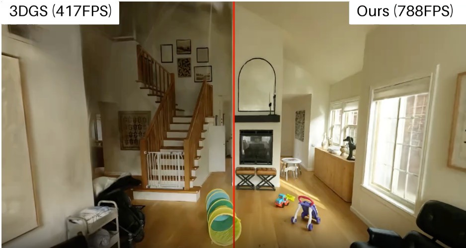

Elia Trevisan
I am a research scientist at Google working on 3D computer vision and generative modeling. Prior to joining Google, I was a PhD student at the Max Planck Insitute for Intelligent Systems supervised by Andreas Geiger. As an undergraduate student, I studied Mathematics at the University of Cologne (Germany) and computer science as the Master's at the University of St Andrews (UK).
For any inquiries, feel free to reach out to me via mail!
CV Mail Twitter Scholar Github LinkedIn

Publications

Yuezhe Zhang, Corrado Pezzato, Elia Trevisan, Chadi Salmi, Carlos Corbato, Javier Alonso-Mora
IEEE Robotics and Automation Letters, 2024
Project Page / Paper /
@InProceedings{zhang2024multi,
author = {Yuezhe Zhang and Corrado Pezzato and Elia Trevisan and Chadi Salmi and Carlos Corbato and Javier Alonso-Mora},
title = {Multi-modal mppi and active inference for reactive task and motion planning},
booktitle = {IEEE Robotics and Automation Letters},
year = {2024},
}Elia Trevisan, Javier Alonso-Mora
IEEE Robotics and Automation Letters, 2024
Project Page / Paper /
@InProceedings{trevisan2024biased,
author = {Elia Trevisan and Javier Alonso-Mora},
title = {Biased-MPPI: Informing Sampling-Based Model Predictive Control by Fusing Ancillary Controllers},
booktitle = {IEEE Robotics and Automation Letters},
year = {2024},
}Walter Jansma, Elia Trevisan, Alvaro Serra-G{\'o}mez, Javier Alonso-Mora
2023 International Symposium on Multi-Robot and Multi-Agent Systems (MRS), 2023
Project Page / Paper /
@InProceedings{jansma2023interaction,
author = {Walter Jansma and Elia Trevisan and Alvaro Serra-G{\'o}mez and Javier Alonso-Mora},
title = {Interaction-aware sampling-based MPC with learned local goal predictions},
booktitle = {2023 International Symposium on Multi-Robot and Multi-Agent Systems (MRS)},
year = {2023},
}Corrado Pezzato, Chadi Salmi, Max Spahn, Elia Trevisan, Javier Alonso-Mora, Carlos Corbato
arXiv preprint arXiv:2307.09105, 2023
Project Page / Paper /
@InProceedings{pezzato2023sampling,
author = {Corrado Pezzato and Chadi Salmi and Max Spahn and Elia Trevisan and Javier Alonso-Mora and Carlos Corbato},
title = {Sampling-based model predictive control leveraging parallelizable physics simulations},
booktitle = {arXiv preprint arXiv:2307.09105},
year = {2023},
}Lucas Streichenberg, Elia Trevisan, Jen Chung, Roland Siegwart, Javier Alonso-Mora
2023 IEEE International Conference on Robotics and Automation (ICRA), 2023
Project Page / Paper /
@InProceedings{streichenberg2023multi,
author = {Lucas Streichenberg and Elia Trevisan and Jen Chung and Roland Siegwart and Javier Alonso-Mora},
title = {Multi-agent path integral control for interaction-aware motion planning in urban canals},
booktitle = {2023 IEEE International Conference on Robotics and Automation (ICRA)},
year = {2023},
}Corrado Pezzato, Chadi Salmi, Elia Trevisan, Javier Mora, Carlos Corbato
Embracing Contacts-Workshop at ICRA 2023, 2023
Project Page / Paper /
@InProceedings{pezzato2023samplingworkshop,
author = {Corrado Pezzato and Chadi Salmi and Elia Trevisan and Javier Mora and Carlos Corbato},
title = {Sampling-Based MPC Using a GPU-parallelizable Physics Simulator as Dynamic Model: an Open Source Implementation with IsaacGym},
booktitle = {Embracing Contacts-Workshop at ICRA 2023},
year = {2023},
}Jitske Vries, Elia Trevisan, Jules Toorn, Tuhin Das, Bruno Brito, Javier Alonso-Mora
2022 International Conference on Robotics and Automation (ICRA), 2022
Project Page / Paper /
@InProceedings{de2022regulations,
author = {Jitske Vries and Elia Trevisan and Jules Toorn and Tuhin Das and Bruno Brito and Javier Alonso-Mora},
title = {Regulations aware motion planning for autonomous surface vessels in urban canals},
booktitle = {2022 International Conference on Robotics and Automation (ICRA)},
year = {2022},
}E Trevisan
2022 International Conference on Robotics and Automation (ICRA), 2020
Project Page / Paper /
@InProceedings{trevisan2020joint,
author = {E Trevisan},
title = {Joint Estimation of Object and Aberration for High Numerical Aperture Microscopy},
booktitle = {2022 International Conference on Robotics and Automation (ICRA)},
year = {2020},
}Homepage Template
This homepage is based on the template by Michael Niemeyer. Checkout his github repository for instructions on how to use it.